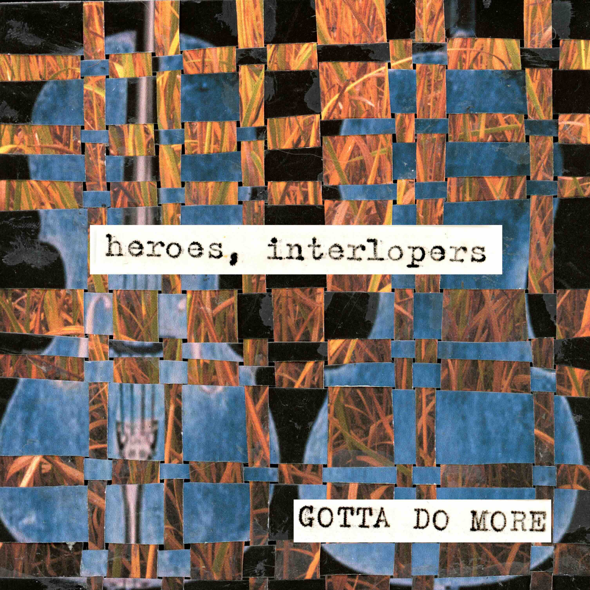
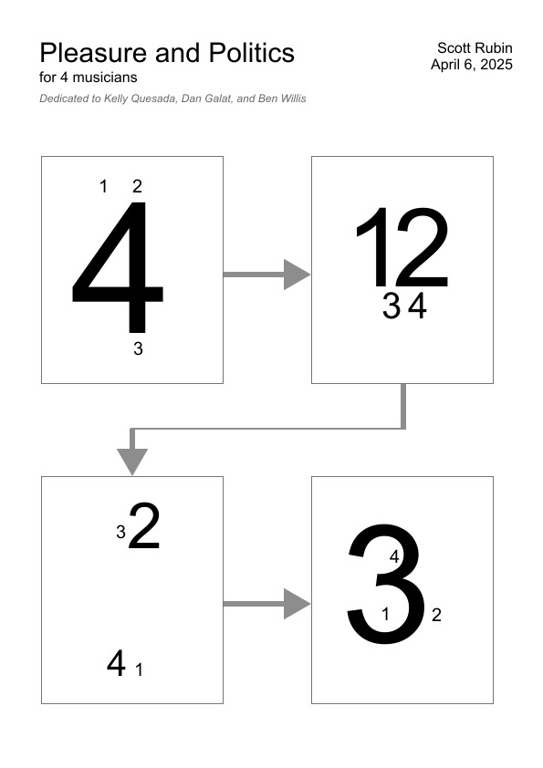
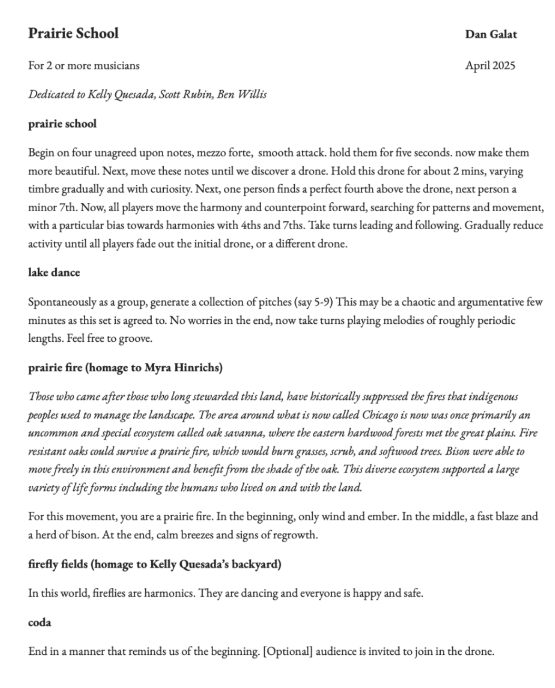
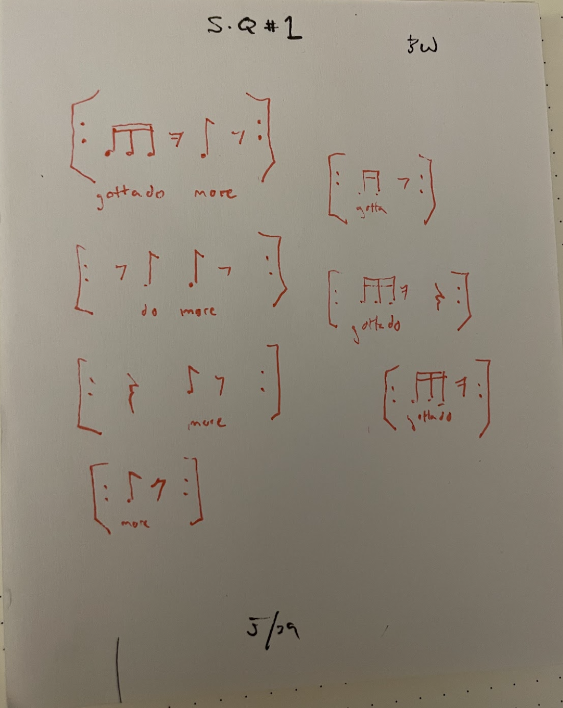
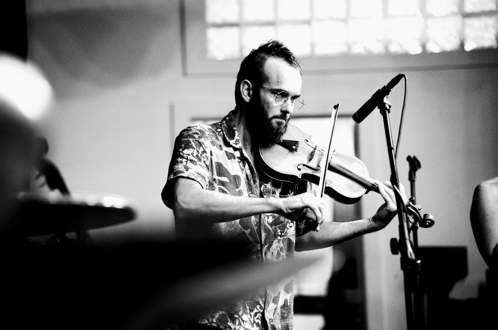
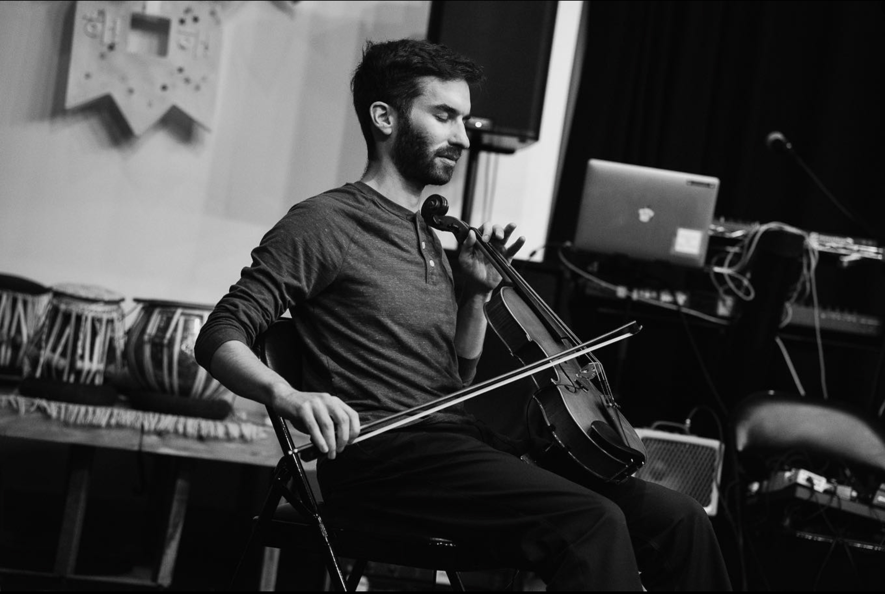
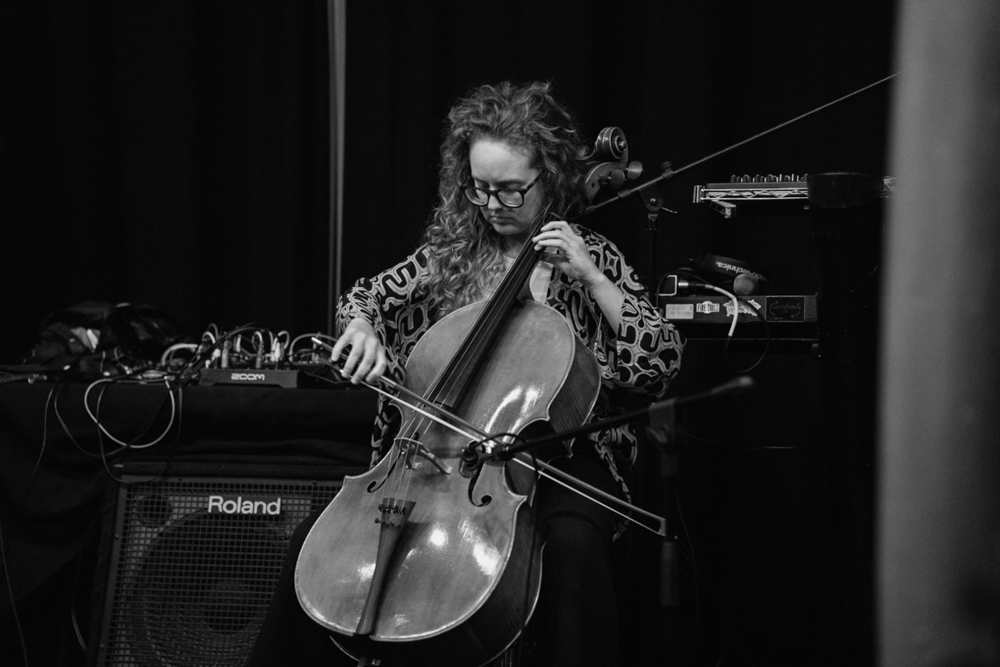

the debut album from heroes, interlopers
Dan Galat
Scott Rubin
Kelly Quesada
Ben Willis

Kelly Quesada, Dan Galat, Ben Willis, and Scott Rubin met through the improvised music scene in Chicago, and in particular, Josh Harlow’s monthly music series at Tangible Books in Bridgeport. Hearing each other’s sounds, and being united in the peculiarity of their instrumentation and approach to improvised music, they decided to record an album together under the name heroes, interlopers.
gotta do more is a collection of 3 graphic scores written by individuals in the band, free improvisations, and an improvisation with Bill Harris, who also engineered the album. To demonstrate the breadth of the graphic scores, each was recorded multiple times with varying interpretations.
Pleasure/Politics, by Scott Rubin, is a performance of a graphic score created using clusters of numbers inside a series of boxes. Each number represents a musician, and their relative position/size in the box represents the relationship of that musician to the others. Before performing, musicians assign each band member a number and discuss how the positions and sizes of each number will manifest themselves musically.

Prairie School, by Dan Galat, is a way of interacting and living with our environment that takes into account our history and the history of land in which we reside and/or occupy. Prairie School is an homage to the friends who teach me and others how to explore the world through cultivation and sound. Prairie school imagines what the world was like and what the world could be like. Prairie School is a dedication to the former Urban Prairie Waldorf School and the incredible teachers, artists, parents and students who made a lovely community together on the southwestern shore of Lake Michigan (Michigami)i. May we all meet together again and sing.

String Quartet #1, by Ben Willis, is .

Dan Galat - violin
Scott Rubin - viola
Kelly Quesada - cello
Ben Willis - contrabass
Bill Harris - engineer and percussion on track 5
Alissa Voth - album art
In partnership with 1473 Records
Recorded at Marmalade Studios in Chicago
Dan Galat is active as a violinist, performer, curator, community musician and collaborator across a wide variety of genres and styles. Dan is primarily active working with composers in new music, co-founding the ensemble Missing Piece with cellist Kelly Quesada which has commissioned and premiered dozens of new musical works in collaboration with composers, poets, artists, potters, and filmmakers. Missing Piece performs around the country and in the 2025-2026 season will present their work at Tulane University, Northwestern University, on the Chicago river, and at the Cook County Forest Preserves.
Additionally, Dan has worked with new music ensembles Chicago Composers Orchestra (concertmaster), Fulcrum Point New Music, and Crossing Borders Music. In jazz and third stream music, Dan was awarded a 2024 Illinois Creative Catalyst Grant for Third Stream, a Missing Piece project that commissioned jazz saxophonists Fred Jackson Jr, Mai Sugimoto, and Hunter Diamond to write new works for strings and saxophone. In theater, Dan has worked with New York-based Justin Peck, Sufjan Stevens, and Nathan Koci to premiere Illinoise at Chicago Shakespeare Theatre. In puppetry, Dan has collaborated with Manuel Cimema (Future Feeling). Dan has performed with the band Sigur Ros in Chicago as a part of their 2025 world tour.
In service of community music, Dan co-founded Bridgeport Music Collective, a musical space in the South Side of Chicago that provides music education, music therapy, and music performances for the people of Chicago. As a part of Bridgeport Music Collective, Dan was awarded a 2026 Chicago DCASE Neighborhood Access Grant for curation of improvised, classical, and music educational performance series.

Photo credit: Ricardo Adame
Scott Rubin is a Chicago-based interdisciplinary artist and improvising violist whose work interrogates relationships between sound and movement through analog and digital means. His recent projects have involved collaborations with musicians and dancers, often incorporating interactive acoustic/electronic improvisation, expanded performance practices, motion-sensors, and live video. In these projects, he engages themes of intimacy, control, and the sublime.
His recent collaborations have been with Cristal Sabbagh, olula negre, Tuli Bera, Helen Lee, Adam Shead, Amanda Maraist, Haruhi Kobayashi, Chris Knowlton, Irene Hsiao, and Nick Turner, and Rin Peisert. His work has been presented at the Chicago Jazz String Summit, Steppenwolf Theater, Hyde Park Arts Center, Instigation Festival, Elastic Arts, Bimbom Studios, Pivot Arts, IRCAM (Paris, France), Gaudeamus Musicweek (Utrecht, Netherlands), Brick 15 (Vienna, Austria), Theatre Am Lend (Graz, Austria), and Gnesin Contemporary Music Week (Moscow, Russia). More information at scottrubinmusic.com

Photo credit: Ricardo Adame
Kelly Quesada is a cellist based on the south side of Chicago. Active as both an orchestral and chamber musician, Kelly can be seen playing a range of styles, from experimental and new music, to Baroque performance practice, to free improvisation. She is currently the other half of the duo Missing Piece with violinist Dan Galat who endeavor to commission new works and connect to their community, as well as the founding cellist of Tuuli Quartet who perform classic and new quartets throughout the Midwest. Previously, Kelly was principal cellist of the Civic Orchestra of Chicago, a founding member of the Delgani String Quartet, and toured as a member of the Portland Cello Project. She has performed throughout the US, appearing at The Green Mill, (le) poisson rouge, Marigny Opera House, the Portland Institute for Contemporary Art, and Constellation Chicago among many, many more. She has recorded multiple tracks as a session musician and is prominently featured in Invisible Light by the Delgani String Quartet and to e.s. by The Portland Cello Project. New releases are forthcoming, including many newly commissioned works and improvised music. Alongside friends April Hickey and Dan Galat, Kelly co-runs a community space in her neighborhood called Bridgeport Music Collective, offering rehearsal space, music education, performances, and music therapy.

Photo credit: Ricardo Adame
Dan Galat is active as a violinist, performer, curator, community musician and collaborator across a wide variety of genres and styles. Dan is primarily active working with composers in new music, co-founding the ensemble Missing Piece with cellist Kelly Quesada which has commissioned and premiered dozens of new musical works in collaboration with composers, poets, artists, potters, and filmmakers. Missing Piece performs around the country and in the 2025-2026 season will present their work at Tulane University, Northwestern University, on the Chicago river, and at the Cook County Forest Preserves.
Additionally, Dan has worked with new music ensembles Chicago Composers Orchestra (concertmaster), Fulcrum Point New Music, and Crossing Borders Music. In jazz and third stream music, Dan was awarded a 2024 Illinois Creative Catalyst Grant for Third Stream, a Missing Piece project that commissioned jazz saxophonists Fred Jackson Jr, Mai Sugimoto, and Hunter Diamond to write new works for strings and saxophone. In theater, Dan has worked with New York-based Justin Peck, Sufjan Stevens, and Nathan Koci to premiere Illinoise at Chicago Shakespeare Theatre. In puppetry, Dan has collaborated with Manuel Cimema (Future Feeling). Dan has performed with the band Sigur Ros in Chicago as a part of their 2025 world tour.
In service of community music, Dan co-founded Bridgeport Music Collective, a musical space in the South Side of Chicago that provides music education, music therapy, and music performances for the people of Chicago. As a part of Bridgeport Music Collective, Dan was awarded a 2026 Chicago DCASE Neighborhood Access Grant for curation of improvised, classical, and music educational performance series.